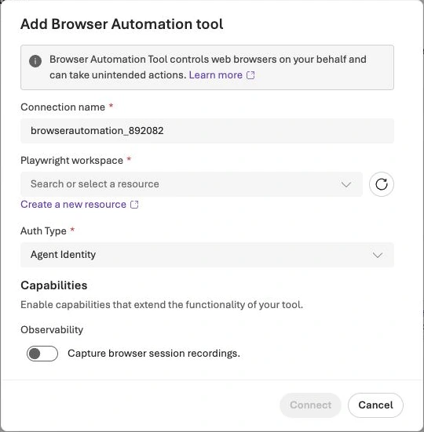

How to test Foundry Browser Automation with a helpdesk ticket
To change the category of a helpdesk ticket you open the ticket, select the new category and click Save. Easy enough if you are sitting in front of the browser. But how do you know that an agent changed the right ticket? In this blog I want to show you how you can check that with Foundry Browser Automation.
For the first part I opened the connection form in my Modern Device Management tenant. The screenshot is from there. For the rest weâll use a sample ticket you can try in your own helpdesk. I left the form unsaved and didnât start a browser session. You can find Microsoftâs release details in the GA announcement.
1. Connect Foundry to a Playwright workspace
First we need a Playwright workspace. Check which regions you can use with your Foundry project, then open the project. Browser tool setup
- Open the projectâs Tools.
- Choose Browser Automation.
- Select the Playwright workspace you want the agent to use. The connection uses the workspaceâs remote MCP capability.


Modern Device Management, 2 November 2026. This unsaved connection form shows Agent Identity and the workspace selector. Connect remains disabled; no browser infrastructure was created.
Here you can see why Connect is greyed out in my tenant. The workspace field is still empty. The other field, Agent Identity, tells you how the agent connects to the browser service. Youâll still need an account to sign in to the helpdesk. The developer who sets up the connection also has separate permissions. Remote MCP authentication
For this example, give the helpdesk account access to your test tickets only. If you are signed in as Global Administrator, use a separate session. Before a real customer ticket appears on screen, check who can watch the session and open its recording.
2. Prepare the ticket and approve the category change
Next we need something we can change and read back. My example is ticket DEMO-1842, currently at version 7. Its category is Unclassified. We want the agent to change it to Device access, once someone at the helpdesk has approved that change.
Iâve written those three values down here so we can check them again at the end.
{
"record": "DEMO-1842",
"before": { "category": "Unclassified", "version": 7 },
"requested": { "category": "Device access" },
"write_requires_approval": true,
"success_requires": ["correct_record", "persisted_category", "single_change"]
}You can keep the JSON next to your ticket number. Itâs a note for the person running the test.
Why use the browser here? In this example the category is only available on the form. If your helpdesk already lets you change it through a supported API or connector, Iâd use that.
The approval before Save
Foundry lets you follow the browser live and take over if you need to. For our ticket the important moment is just before Save. This is where Iâd use the toolâs approval controls. Supervision capabilities
- Have the agent show the ID, current category and proposed category.
- Ask the reviewer to approve the specific change: âChange DEMO-1842 from Unclassified to Device access.â
- If someone edits the record while approval is pending, read it again and ask for a fresh approval.

Proposed acceptance flow. Approval and final-state verification are separate decisions.
Set the approval on the tool or in the ticket system. If you have also connected an MCP tool that can edit tickets, check that path too. Otherwise the agent can still reach the same field without that approval.
I wrote down how I check who the MCP tool runs as and what it can change in the five gates I use for production MCP tools.
If you take over and change the ticket yourself, have the agent reopen it when you hand back control.
Suppose a colleague edits the same ticket while you are approving version 7. Have the application check that version when it saves. Reading the page a second time still leaves a gap before the click. If the form canât check the version, keep the save manual or use an API that can.
3. Reopen the ticket and check what was saved
Now we can look at what arrived in the helpdesk. Keep the ticket ID, the two categories, the approval and the save attempt together, then open the ticket again.
- Reopen
DEMO-1842in a fresh view. You can also use the applicationâs read API or audit record. - Check the ticket ID again.
- Read the saved category. On the approved example ticket you should now see Device access. The Saved notification alone canât show you which record changed.
What if the page times out just after the click? Look up DEMO-1842 again before asking the agent to repeat it. The helpdesk may already have saved the new category. If it supports idempotency, use it so it can recognize the same request a second time.
What if someone declines or the browser times out?
Once the usual case works, try the following with the same agent version and helpdesk role.
- Open two tickets with similar subjects. Approve only
DEMO-1842and check the other ticket afterwards. - Decline a change. The old category should still be there and the audit log should show no write.
- Interrupt the connection just after Save. When the session resumes, the agent should read the ticket before attempting another save.
Then try signing in again after the session expires. You can also put an export request in the ticket text. Reading that sentence should never grant the agent permission to export. If somebody edits the ticket during takeover, ask for approval on the changed ticket.
Which records would I keep?
A recording can include personal information, tokens or customer documents. Decide who can open it and when it will be deleted. Foundry also has separate permissions for sensitive trace content. Trace-content access
For a failed change Iâd keep the ticket fields and the correlation ID. Iâd also write down how long the session ran, how often it retried and how long someone had to take over. You wonât find that time in the token count.
Thatâs it for our test ticket. If you try this in your own helpdesk, start by declining the first change. Open the ticket again. It should still say Unclassified. I hope this helps you try Browser Automation with a ticket you can check yourself.
Stay healthy, Cheers
Jannik